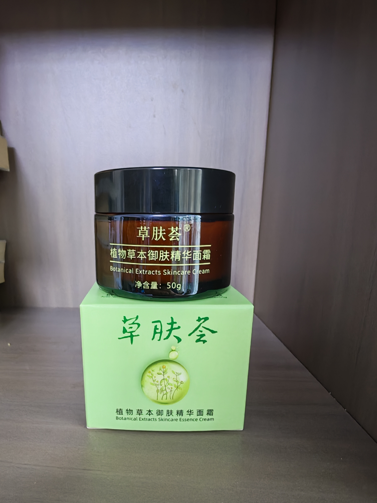

从一株植物，一组御肤。
跟随三种草本，走进草肤荟的配方。
↗ 进入 3D 影棚 BOTANICAL EXTRACTS植物草本御肤精华液 50 mL
THE BOTANICAL EDIT / 2026 向下探索 ↓ 课程设计作品 · 非品牌官方站点
两款产品，
02 同系列产品精华液与面霜叠加阅读
03 植物图鉴从植物认识成分线索
08 成分阅读8 项配方条目可展开查看
01 / THE COLLECTION
一套御肤，两种质地。 精华液与面霜组成同一御肤系列。
THE BOTANICAL DUO
同一组植物线索，两种日常质地。
从轻盈水相精华到膏霜质地；选择一件产品，进入它的实物、包装与配方记录。
01 / ESSENCE 植物草本御肤精华液 50 mL · 礼盒装 · 3D 影棚 查看精华液记录 ↗ 
02 / CREAM 植物草本御肤精华面霜 50 g · 罐装 · 包装记录 查看面霜记录 ↗
每件产品以实物与包装可确认信息为准。
精华液正面实拍 / 50 mL 礼盒装
草肤荟 / CAOFUHUI 植物草本 Botanical Extracts Skincare Essence
50 mL · 礼盒装10 mL · 便携装
琥珀色瓶身，植物绿包装。除了外观，瓶身上的名称、规格和使用说明，也是认识产品的起点。
使用方式 根据品牌信与瓶身说明整理
01 02 涂抹，静候吸收 均匀涂抹于面部；品牌信建议无需拍打。
03 按说明使用 瓶身建议早晚各一次，具体以实物包装为准。
打开完整配方记录 ↓
同系列面霜正视实拍 / 50 g
THE COMPANION / 50 g
植物草本
Botanical Extracts Skincare Cream
植物草本御肤精华面霜，50 g。深棕色罐身搭配植物绿外盒，包装标注抗皱、舒缓、紧致；建议早晚各一次。
抗皱 舒缓 紧致
产品名称 草肤荟植物草本御肤精华面霜
净含量 50 g
使用说明 取适量涂抹于面部，轻轻按摩至吸收；包装建议早晚各一次。
查看包装与配方 ↓
包装中的植物提取物
红景天（Rhodiola rosea）、千日菊（Acmella oleracea）、三叶鬼针草（Bidens pilosa）等植物提取物列于包装成分表中。
包装标注
外盒标注“抗皱、舒缓、紧致”，并写有呵护肌肤、淡化皱纹、舒缓安抚等描述。
产品信息来自面霜包装照片与成分表。
02 / THE HERBARIUM
在配方里，遇见植物。 三株植物并列呈现。选择其中一株，再按自己的阅读节奏打开植物科普。
01 三叶鬼针草 Bidens pilosa 02 千日菊 Acmella oleracea 03 红景天 Rhodiola rosea SELECT A BOTANICAL 选择一株植物，查看它的识别、背景与配方定位。
BOTANICAL / 01 配方 03
Bidens pilosa 三叶鬼针草 从形态、分布和植物研究线索认识三叶鬼针草。
植物识别 菊科一年生草本；叶对生。
植物背景 原产热带美洲，多地引种归化（Kew）。 配方定位 03 16 项主配方记录
查看植物科普 ↓ BOTANICAL NOTES 植物科普 · 3 段阅读
三叶鬼针草是一年生菊科草本，叶形、花序和带倒刺的瘦果，是认识它的主要线索。
形态与分布 它常见于温暖地区，叶多对生，常见三至五个小叶或裂片；黑色瘦果顶端的倒刺有助于传播。Kew 资料将其记录为原产热带和亚热带美洲、现已在多地引种或归化的一年生草本。
植物成分线索 相关研究常提到黄酮、酚类和植醇等成分线索。不同产地、部位、提取溶剂和工艺会影响组成，研究结果需要结合具体原料条件理解。
护肤研究观察 部分研究围绕含三叶鬼针草提取物样品的紧致抗皱表现展开，观察内容包括样品浓度、配方基质、周期和受试者条件。
植物资料 ↗ BOTANICAL / 02 配方 05
Acmella oleracea 千日菊 从花序、叶形和植物成分线索认识千日菊。
植物识别 菊科一年生草本；黄橙色头状花。
植物背景 巴西东南部栽培起源记录（Kew）。 配方定位 05 16 项主配方记录
查看植物科普 ↓ BOTANICAL NOTES 植物科普 · 3 段阅读
千日菊是一年生菊科草本，黄色至橙色的头状花序和花部的烷基酰胺，是认识它的两个入口。
形态与植物背景 千日菊的头状花序外形醒目，叶片多为宽卵形至三角状并带齿。Kew 资料将其记录为菊科一年生草本，原生范围与巴西东南部的栽培起源记录有关。
植物成分线索 公开研究常关注千日菊花中的烷基酰胺，这类成分与传统使用中出现的麻感有关。成分名称、提取部位和标准化方式会影响研究中的组成与观察结果。
护肤研究观察 相关研究涉及局部神经、炎症与表情相关皮肤纹理等方向，研究对象包括细胞、动物模型和局部使用样品。
植物资料 ↗ BOTANICAL / 03 配方 09
Rhodiola rosea 红景天 从生长环境、形态和植物成分线索认识红景天。
植物识别 景天科多年生多肉；叶片肥厚。
植物背景 北半球亚寒带、亚高山分布。 配方定位 09 16 项主配方记录
查看植物科普 ↓ BOTANICAL NOTES 植物科普 · 3 段阅读
红景天属植物多见于北半球亚寒带和亚高山环境，日常传播中也常被称作“高原人参”。
形态与分布 红景天为景天科多年生多肉植物，叶片通常较厚，花序较为密集。World Flora Online 与 Kew 的植物资料记录了它的分类与分布背景。
植物成分线索 相关研究常提到红景天苷、酪醇和黄酮类等成分线索，不同物种、部位、产地和提取方式可能带来组成差异。
护肤研究观察 相关研究涉及自由基清除、紫外线相关 ROS、酪氨酸酶、成纤维细胞和炎症因子等方向，覆盖生化、细胞与组织模型。
资料：World Flora Online 与公开研究资料。 查看资料 ↗ 植物资料 ↗
ILLUSTRATIONS FROM BRAND MATERIALS 插画取自课程提供的品牌视觉素材，用于植物名称关联。
03 / INGREDIENT NOTES
名字很专业，解释可以很简单。 从配方中选取 8 项条目展开阅读，其余名称保留在完整配方顺序中。
02 保湿剂 · 溶剂 丁二醇 Butylene Glycol 保湿与溶剂，常见于水相精华。 ↗ 04 依克多因 · 皮肤调理 四氢甲基嘧啶羧酸 Ectoin 依克多因：一项皮肤调理成分。 ↗ 08 维生素 B5 前体 泛醇 Panthenol 泛醇：基础护理配方里的常见名字。 ↗ 12 透明质酸的钠盐 透明质酸钠 Sodium Hyaluronate 透明质酸的钠盐形式，常用于保湿体系。 ↗ 13 溶剂 · 皮肤调理 1,2-己二醇 1,2-Hexanediol 精华稳定，来自多个环节共同协作。 ↗
成分身份 1,2-己二醇是一种常见的二元醇类成分。
一般角色 常作为溶剂与皮肤调理成分使用；它与相邻列出的对羟基苯乙酮，共同构成理解精华稳定体系的一条配方线索。 水相精华的稳定通常由原料质量、生产卫生、pH、包装密封与配方辅助体系共同维持。1,2-己二醇与对羟基苯乙酮的组合，常出现在这类体系的阅读语境中。
S08 · COSMILE Europe：1,2-Hexanediol ↗
每项从成分身份、一般角色和资料来源展开；配方序列独立保留原始顺序。
04 / SOURCES & CONTEXT
好奇，也有据可循。 把产品资料、植物资料与成分资料分开列示。
“ 先读名字， 页面以产品包装、植物资料与成分资料为阅读依据；配方记录、研究线索和资料出处均集中列示。
资料整理 / 2026.11.05 S01—03 产品与图片资料+ S01 · 配方与包装 课程素材包中的产品资料、精华液正背面与礼盒照片。成分分组照录，规格来自图片。
S02 · 品牌信 《致草肤荟用户的一封信》。仅摘取产品操作说明及有归因的品牌自述。
S03 · 素材使用说明 教师提供的素材使用意见说明：照片可以使用及裁剪；本项目按课程展示用途使用。植物图取自课程提供的三张品牌视觉素材。
查看包装照片 ↗ S04—14 成分、植物学与科普来源+ 一般功能与名称对照参考 COSMILE Europe 成分数据库；三种植物的分类、分布与形态线索参考 Kew Plants of the World Online 和 World Flora Online。S12—14 分别对应红景天、三叶鬼针草与千日菊的植物科普文章，点击下方链接可阅读公众号原文。查阅日期：2026-11-05。
ABOUT 关于这个探索馆+ “草肤荟·成分探索馆”是课程设计作品，以“植物 → 成分”和“成分 → 配方”两条路径组织信息。
这里通过植物图鉴、成分解码和 3D 产品展示，连接植物名称与配方信息。产品照片与植物插画来自课程提供的品牌素材。